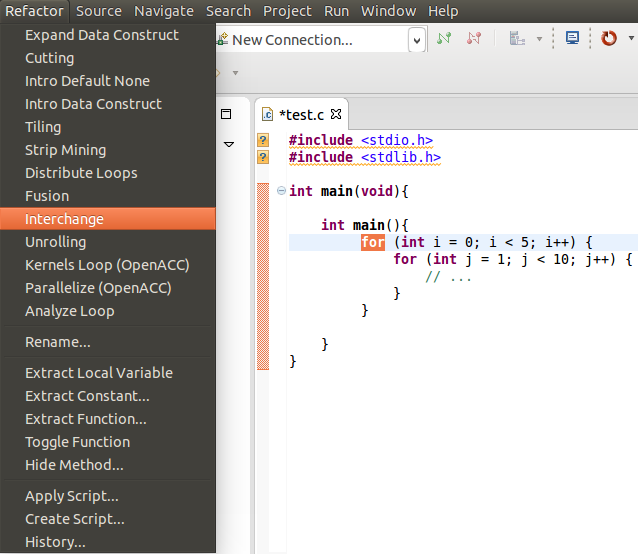
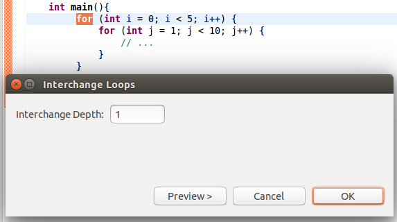
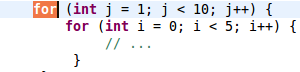

Interchange Loops
Use:
Interchange can improve memory access time by accessing the same block of memory all at the same time instead of coming back to it over and over and having to reaccess the memory block.
Description:
When two loops are nested, swaps the loops headers.
Example:
- Select the desired for loop to be changed and choose Interchange under the Refactoring menu.

- Next you will be prompted for the depth of the loop to be switched.

- The resulting for loop.

Restrictions:
- The selected loops must be perfectly nested.
- The selected loop cannot carry dependence in the less than direction and be in the greater than direction after interchange as occurred.
- The selected loop cannot carry dependence in the greater than direction and be in the less than direction after interchange as occurred.